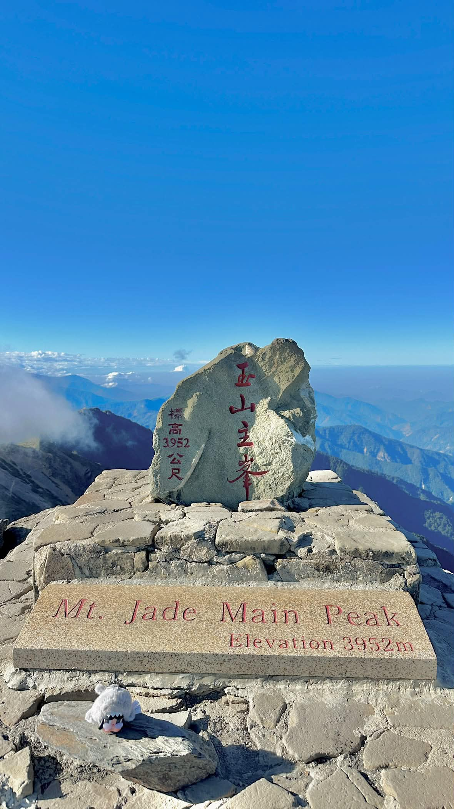
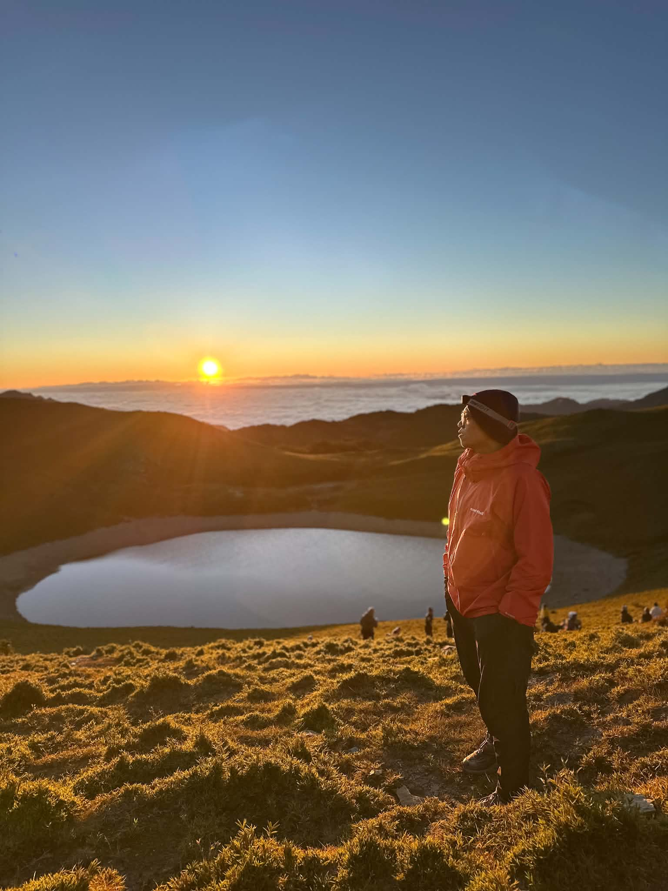

山，讓我們看見不一樣的世界
有人問，為什麼總是往山裡跑？ 明明知道路途遙遠，明明知道登頂不容易， 卻仍然一次又一次背起背包，踏上山徑。
或許是因為山林裡沒有城市的喧囂， 只有腳步聲、風聲，以及與自己對話的時間。
我們在山裡遇見日出、雲海與滿天星斗， 也在陡峭的山徑中學會堅持， 在疲憊時感受到夥伴的陪伴。
山頂不是旅程唯一的答案。 真正值得珍惜的， 是沿途看見的風景，以及一起走過的人。
每一次出發，都是與自己重新相遇的旅程。
看山小是一個熱愛台灣山林的登山團隊。 我們相信，登山不只是抵達山頂， 更是一段探索自然、認識自己與夥伴的旅程。




有人問，為什麼總是往山裡跑？ 明明知道路途遙遠，明明知道登頂不容易， 卻仍然一次又一次背起背包，踏上山徑。
或許是因為山林裡沒有城市的喧囂， 只有腳步聲、風聲，以及與自己對話的時間。
我們在山裡遇見日出、雲海與滿天星斗， 也在陡峭的山徑中學會堅持， 在疲憊時感受到夥伴的陪伴。
山頂不是旅程唯一的答案。 真正值得珍惜的， 是沿途看見的風景，以及一起走過的人。
從登山鞋、背包到保暖與防雨裝備， 根據路線難度、天氣及行程天數， 選擇合適的裝備，讓登山更加安全舒適。
喜歡登山，也想認識更多熱愛山林的朋友嗎？ 歡迎持續關注看山小，一起探索台灣的山林。
團隊聯絡資訊將陸續公布。